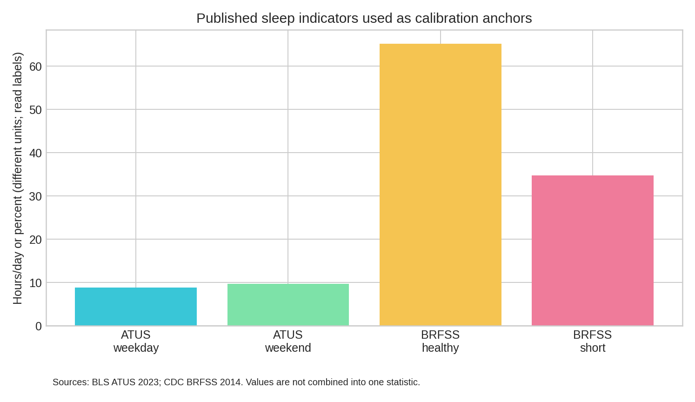
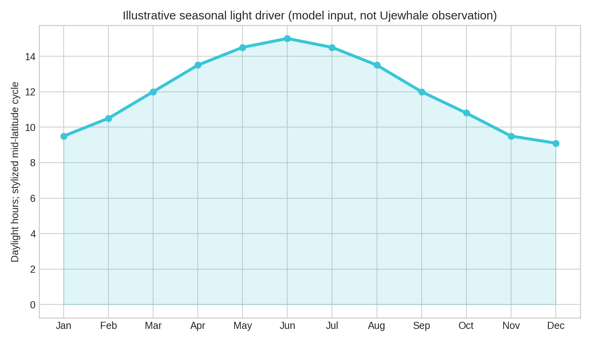
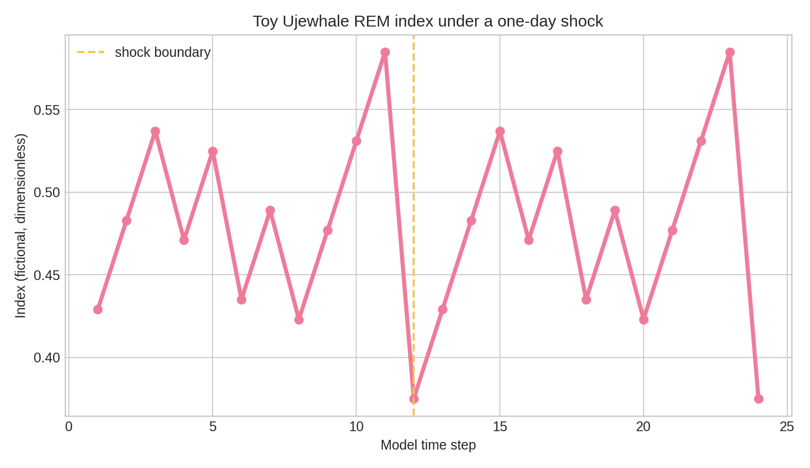

Ujewhale
Macro-Sleep
A 23-page research-style thought experiment about fictional Ujewhale REM–wake cycles, calibrated with clearly labeled real sleep statistics.
Read and reproduce
🎛️ Explore the toy macro model
📄 Read the 23-page PDF
🐍 View the Python report generator
🧾 Download the calibration CSV
Ujewhales, REM indices, and simulated trajectories are fictional. Real values retain their source and units; the model does not claim to measure whales or diagnose sleep.



What the report argues
Macro models can describe aggregate synchronization, shocks, and recovery. Agent-based and physiological models are still needed for individual sleep mechanisms. The report includes tables, titles, subtitles, source notes, reproducible code, limitations, and a 24-item bibliography.